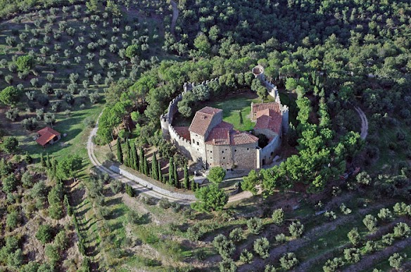

All About Walt's interests in European Churches
As an US Army veteran and University of Washington Accounting graduate, my favorite past time and passion is all things Europe. While I love the US and feel so lucky to live in a wonderful area of the world,I'm instinctly attracted to the "old world" charm of Europe. As a kid growing up in Sembach, Germany, I couldn't wait for my elementry class to go on our once a year "Field Trip". The field trips were always a big thing. My first "big" trip was to Heidelburg to see the Heidelburg Castle or "Schloss Heidelburg". The rich and eventful history of Heidelberg Palace began when the Counts Palatine of the Rhine, – later prince electors – established their residence at Heidelberg. First mentioned in 1225, this was destined to become one of the grandest palaces of the Renaissance. Over the years, I've visited so many castles throughout Italy, Germany and Spain, that I was once inspired to spend a week in an old castle in Italy. Well, ok, it wasn't really a castle but more like a fortress. The Montegualandro fortress, perched 450 metres over sea level, dominates the hills west of Tuoro. Nowadays, the entire estate is private and closed to occasional visitors, but remains nevertheless worth a walk around the walls, which afford scenic views over Lake Trasimeno and the plains of Tuscany. My wife and young kid (now 26 and a Peace Corp Volunteer in Ethiopia), stayed a week there. It was a blast and a great value for the money While I'm proud of my time in the Army and opportunity to travel, I don't suggest that you go out and hunt down your local Army recruiter. Frankly, my 10 years of service followed by 24 years of civilian life, was not a good use of my time on this earth. But you can't roll back the clock, you move forward. My goal in taking this class is to provide small tours to Europe by getting customers through my specifically designed website that was created by me. Combined with a website, I would like to blog about travel as well. The end goal of course is to monitize my page when I finally do retire. That, like the ground coming up at you fast upon a parachute jump, is coming up quickly.
